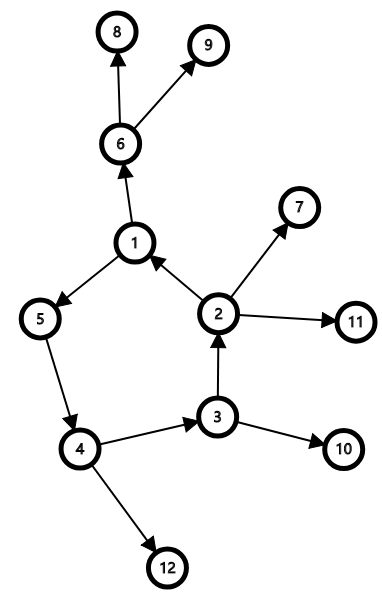
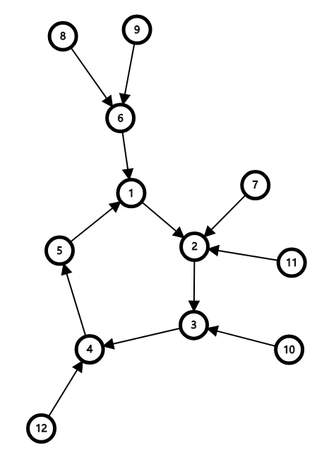
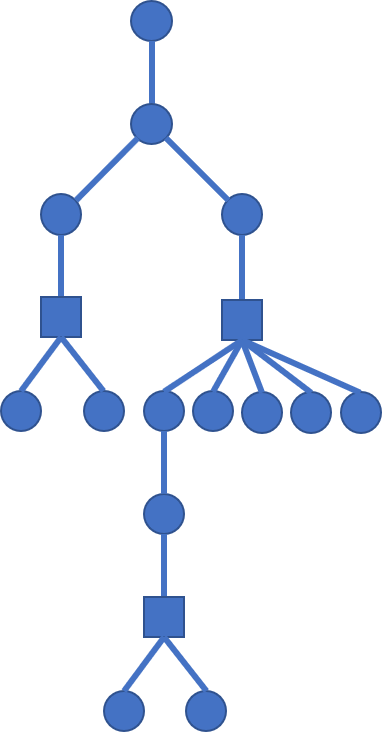

基环树是一种特殊的图,在一棵树上加一条边使之有且仅有一个环.故称之为基环树.
圆方树,顾名思义,是由圆点与方点组成的树,是处理仙人掌图与任意无向图的有利工具.
基环树
定义
基环树定义为由$n$个点$n$条边组成的无向连通图.由此定义可以直到,任意一棵基环树是由且仅有一个环的.由多棵基环树组成的叫做基环树森林.
若在基环树上,每条边是有向的,且满足每个点有且仅有一条入边,则我们称其为外向树;若每个点有且仅有一条出边,则称其为内向树.

一个外向树的实例.

一个内向树的实例.
搞懂了基环树的定义,那么我们就要着手分析它的应用了.
应用
对于基环树的应用,大多都是分情况讨论的:
- 对于不在环上的点,一般处理
- 对于在换上的点特殊处理
接下来所述应用都是基于这两点的.接下来的应用都需要找环,这里使用Tarjan去找还.
基环树的直径
基环树的直径定义为基环树中最长的一条简单路径.容易直到,基环树的直径是两部分的最大值:
- 环上每个节点在不经过环上其他节点所组成的子树中的直径
- 从环上某个点的子树中的节点到该点,再经过环到达一个点,最后从这个点走到它的子树中的某个点.
对于第2点,我们同样可以直到,从环上某个点的子树到该点的路径长度一定是从该点出发到达子树的最长距离.因此我们就可以分开来讨论.
对于不在环上的节点,用普通的Dp去解决每个环上节点的子树的最长链,顺便求出从每个环上节点到它的子树中的最长距离.
对于环上节点,我们可以$O(n^2)$去枚举哪两个点配对,即从哪个点入,从哪个出.显然不够优秀.我们考虑将环断开,并且复制一份在末尾.我们设环上节点总数为$N$,总长度为$Len$,那么我们可以通过处理出每个点到环根节点(即为断环后的第一个点)的距离$sum[i]$,得到环上第$i$个点到第$j$个点的距离($i<j$):
我们观察变形之后的式子,也就是等式右边的式子,可以发现括号右边的式子与括号左边的式子没有本质的区别,只不过都满足$sum[j]-sum[i]\le Len,sum[j]-sum[i+N]\le Len$.这样变换之后,环对答案的贡献就是($f[i]$为环上第$i$个点到其子树的最长距离):
这里是把环断开并且复制一倍后的式子,这里就利用上面所说的性质.然后我们发现,这东西可以用单调队列去解决,只需要维护$sum[i]-f[i]$的最大值即可,时间复杂度$O(n)$.
1 |
基环树上两点距离
基环树上两点距离定义为两点之间的最短的简单路径.对于一棵树,显然可以预处理它的倍增数组,再进行倍增跳.而对于基环树,容易直到,若两个点在同一个环上节点的子树中的话,直接倍增查找即可.但是,若两个点在不同的子树中,此时跳到环根节点后有两种选择,通过两种环上路径相遇,此时查找这两种的最短路径即可.
故整个算法流程如下:
- 预处理处所有环上节点的子树的倍增数组
- 对于两个点,按照树的方法向上跳
- 若最后为同一个点,就说明这两个点在同一个子树中,直接返回距离值即可
- 否则查找两种方向的最小值,返回最小值加上两个点到对应的环上节点的距离
基环树Dp
基环树上的Dp一般是考虑先处理环外节点,得出环上每个点的子树的贡献,再枚举第一个点的状态,在环上进行一遍Dp,得出最后的答案.
现在有这样一道题:要求基环树上的最大独立集.
如上所述,这种题就需要先用朴素的Dp跑出环上每个的子树的最大独立集,再枚举环上第一个点选,不选的状态,最终就是找出最大值,就是答案了.
1 |
这道题还有另一种做法.
先找出环上的一条边,将其断掉,再分别以改边的两边节点为根,跑两次普通的树的最大独立集,那么答案就是分别以这两个点为根时,这两个点不选的情况下的最大值.
1 |
1140 — 【练习题目】城市环路
1142 — 【练习题目】创世纪
2218 — 【ZJOI2008】骑士
圆方树
顾名思义,是由圆点和方点所组成的树.是处理仙人掌图的有力工具.所以先说明一下什么是仙人掌图.
仙人掌图与一般圆方树
仙人掌
若一个连通图中每个点至多属于一个环,那么这个图叫做点-仙人掌图.若一个连通图中每条边至多属于一个环,那么这个图叫做边-仙人掌图.一个很显然的事实就是任何一个点仙人掌图一定是边仙人掌图.故我们只考虑边-仙人掌图.
下面放出基本上与仙人掌有关的题都会有的图.

圆方树
一般意义下的圆方树都是在仙人掌中定义的.对于一个仙人掌,我们将原图中存在的点看作圆点,而对于每个一个环,我们对这个环新建一个方点,将环上所有圆点都连向这个方点,将存在于环上的边断掉,对于连接两个圆点的边不变.显然,这个新图是一棵树,而这棵树就叫做圆方树.比如上面的仙人掌转化的所对应的圆方树如下.

为了接下来讲述方便,我们就以其中一个点为根,叫做仙人掌根,将每个方点的父亲称作这个方点所代表的环的环根节点.
对于有边权的仙人掌,那么为了方便,我们就会让圆点与圆点连边的边权不变,让圆点与方点的连边的边权为这个点的到对应的环根节点的最短简单路的长度.这样求仙人掌两点之间的距离就比较方便.
圆方树的性质
根据以上的讲述,容易得到圆方树的一下性质:
- 任选一个点圆点作为圆方树的根不影响处理的结果(边权信息除外)
- 圆方树的一个子树与原仙人掌的子仙人掌一一对应
- 方点与方点不会相邻
- 圆方树上每一个节点到根的距离为该点在原仙人掌中到仙人掌根的距离
构建圆方树
如何建立圆方树?这里采用Tarjan算法(不是求LCA的).由于同一个环里的短边一定是属于同一个点双连通分量,所以我们采用Tarjan算法找出所有的点双连通分量.
圆方树的应用
圆方树上两点之间距离
圆方树的直径
圆方树上Dp(仙人掌Dp)
广义圆方树
广义圆方树是处理任意无向图的有利工具.同样是借用一般圆方树的思想,将无向图转化为树去处理.不过区别就是任意一个点双联通分量都要新建点,对于两个点相连的情况也是如此.所以在广义圆方树中是不会有两个方点相邻,也不会有两个圆点相邻.